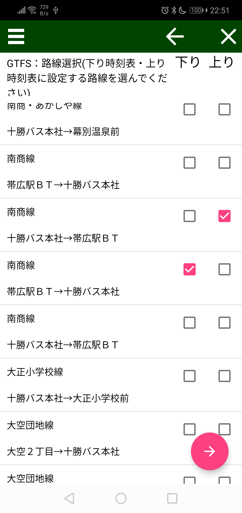

GTFSのファイルを開く(試験機能) ファイヤファイルを開く際に、zip形式で保存されたGTFSデータを開くことができます。 GTFSデータを開くと、route一覧が開きます。 下り時刻表、もしくは上り時刻表に設定したいrouteにチェックを入れてから、下部にある「右矢印ボタン」をタップしてください。 oudiaファイルが生成され、開きます。 注意：GTFSの読み込み機能が不十分な部分が多く、アプリが強制終了される事もあります。 使用の際はご注意ください。 